AWS
Amazon Web Services, também conhecido como AWS, é uma plataforma de serviços de computação em nuvem, que formam uma plataforma de computação na nuvem oferecida pela Amazon.com. Os serviços são oferecidos em várias geográficas distribuídas pelo mundo.
Neste pequeno tutorial, vamos demonstrar como criar uma máquina virtual de Ubuntu Server na AWS, utilizando o recurso de EC2, e hospedar um site default no servidor através do Apache2.
Vamos seguir uma sequência lógica através de cores, pouco a pouco, passando pelos passos:
- Login na AWS
- Criação da Máquina Virtual
- Download do Putty
- Conversão da Chave
- Subir Apache2
Login na AWS
Para iniciarmos, vamos entrar no site do Console da AWS para termos acessos à função do EC2.
Ao abrirmos, aparecerá uma imagem assim:
Vamos entrar em "Fazer login novamente"; pode ser que apareça como "Fazer Login na AWS".
Ao entrarmos, chegaremos numa tela perguntando se somos o usuário root (geralmente, donos de uma conta) ou se somos usuario IAM que nos permite ter acesso a uma conta gerenciado por outro usuário, no caso o usuário root.
Para prosseguirmos, precisaremos ter acesso a um IAM ID disponibilizado pelo usuário root. Após indicado o ID, seguiremos ao Próximo onde vamos encontrar a tela para inserir o nome de usuário e senha.
Aqui, colocaremos o nosso usuário e senha padrão definida pelo usuário root. Obs.: No seu primeiro acesso, será necessário trocar a senha padrão por uma nova. Basta colocar a senha padrão em "Senha antiga" e definir uma nova senha.
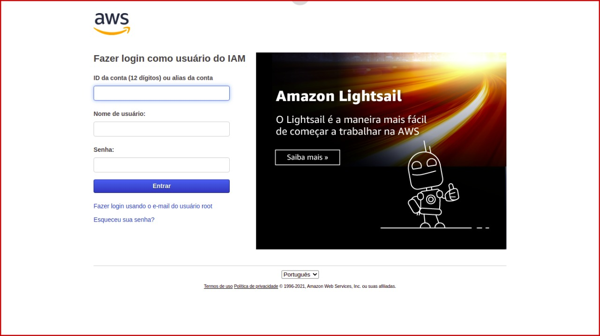Siga para Entrar
Feito isso, você já estará na tela padrão do Console da AWS.

Criação da Máquina Virtual
Após realizar o login no site da AWS, vá barra de pesquisa procure por "EC2" e selecione-o clicando em cima do nome:

Ao entrar nessa opção, carregará uma tela com as funções e serviços da AWS
Ao entrarmos nessa tela, partiremos agora para a criação da máquina virtual, ou como é nomeado na AWS - Instância.
Para começar, vamos em Executar Instância e clicar na seta, para mostrar as opções disponíveis.
Dentre as opções listadas acima, vamos em "Executar Instância"
Etapa 1
Aqui selecionamos o Sistema Operacional da nossa máquina virtual hospedada na Nuvem da AWS.
No nosso caso, selecionaremos o sistema Ubuntu Server 20.04 LTS, que será onde hospedaremos o nosso servidor web:
Basta clicar em Selecionar
Etapa 2
Aqui já está selecionado o tipo T2 Micro que nos dá acesso a uma máquina "gratuita" (dentro dos serviços do usuário root), então basta clicar em Próximo: Configure os detalhes da instância
Etapa 3
Nesta tela não adicionaremos e nem mudaremos nada, mantendo o
padrão da máquina já selecionada, basta clicar em
Próximo: Adicionar armazenamento
Etapa 4
Assim como o tipo da máquina, aqui vamos deixar o já selecionado padrão gratuito, disponível pelo usuário root; no caso de 8 GiB e vamos para a próxima etapa clicando em Próximo: Adicionar Tags
Etapa 5
Para agora, vamos adicionar a Tag "Name" no campo onde está Chave e "6dev", sendo que esse valor pode ser qualquer nome que representará a sua máquina na AWS, no campo onde está Valor
CLique em Adicionar Tag para tornar esses campos visíveis e adicionar essa tag "Name - 6dev"
E então, vamos para Próximo: Configure security group
Etapa 6
Nesta tela temos algumas configurações importante para tornar a nossa máquina um ambiente de servidor web, então siga o passo-a-passo com calma e foco.
Primeiro, vamos adicionar regras de grupo de segurança, a começar pela de HTTP, ao adicionar, fique tranquilo porquê todas as configurações de porta e IP são preenchidas automaticamente.
Obs.: Note que o SSH já vem por padrão, pois é por essa porta a qual conseguimos acessar a máquina virtual a distância, seja via puTTy ou SSH por linha de comando.
Logo depois, vamos adicionar a regra de HTTPS, liberando assim as duas principais portas de acesso aos protocolos de internet HTTP & HTTPS
Não se esqueça de alterar o nome do grupo de segurança para o nome que desejar; tal como a descrição informando o básico sobre aquele grupo de segurança configurado pra nossa máquina.
Ao finalizar, podemos prosseguir à Verificar e Ativar
Etapa 7
Ao confirmar, essa tela será apenas uma tela de verificação das informações descritas da máquina e então da inicialização da máquina/instância.
Assim que finalizada, basta clicar em Executar
Assim que executarmos, aparecerá a tela sobre o Par de Chaves para conexão via SSH à nossa máquina; então vamos "criar um novo par de chaves" e nomeá-lo com o nome da nossa máquina virtual.
Faça o download desse par de chaves e guarde-o num local seguro, se possível, faça um backup, pois caso perca esse par de chaves, você perde também o acesso à instância.
Assim que o download for finalizado, o botão de Executar Instância será liberado e você poderá, finalmente, inicializar a sua primeira máquina virtual na nuvem da AWS!
Ao clicar, você será redirecionado à uma tela de confirmação, onde indica que sua instância foi iniciada:
Vamos voltar ao EC2 e confirmar se nossa instância já está lá!
Para voltar, segue o mesmo caminho, do início entrando na barra de pesquisa e digitando "EC2", selecionando-o clicando em cima do nome.
Porém dessa vez, iremos entrar em Instâncias

Ao abrir, abrirá uma tela contendo uma tabela com todas as instâncias que estão rodando naquela conta.
Por agora, vamos apenas deixar nessa tela para pegarmos o IP público da nossa máquina e então, mais pra frente, entraremos em mais detalhes desse IP.
Download do Putty
Para fazer o download do Putty basta acessar esta página!
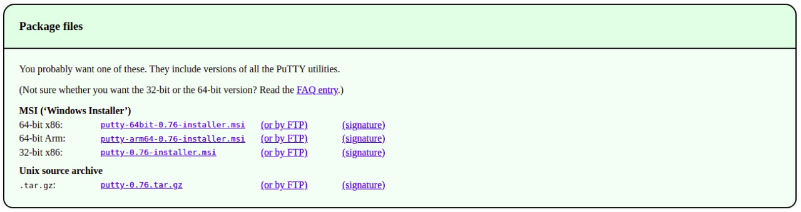Em seguida selecione o arquivo para download de acordo com a sua máquina e faça a instalação, num padrão next, next & ready.
Após a instalação do Putty pesquise por "putty gen" em sua máquina e abra-o (sigo o exemplo na imagem):
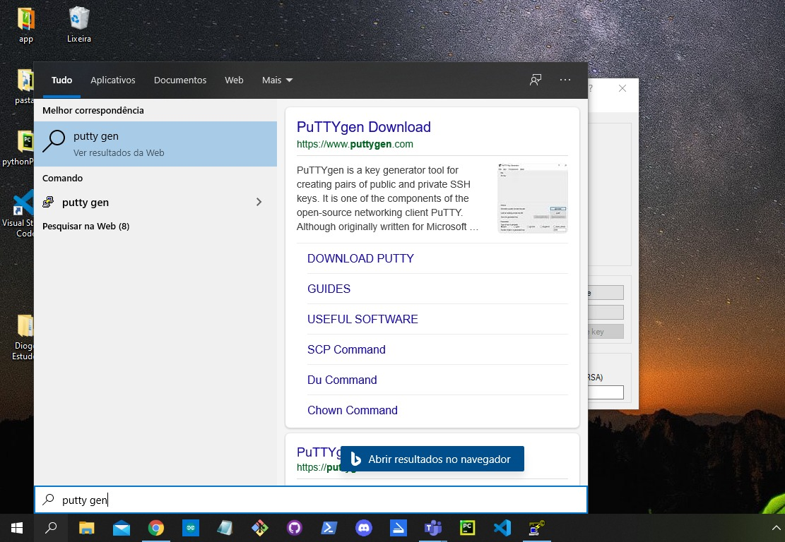Ao abrir a janela "PuTTY Key Generator" clique em Load para carregar o arquivo .pem e transformá-lo em .ppk.
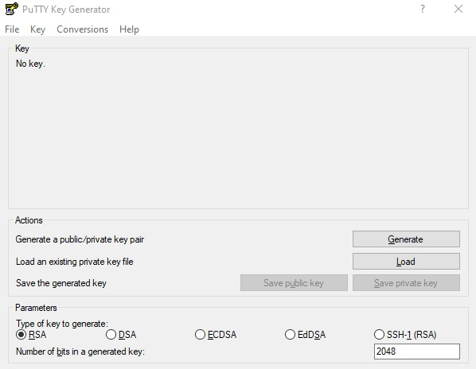Na janela "Load private key", vá até o menu ao lado do nome do arquivo e mude de PuttyPrivate Files para AllFiles para procurar a chave que foi baixada anteriormente, ao selecioná-la clique em Abrir;
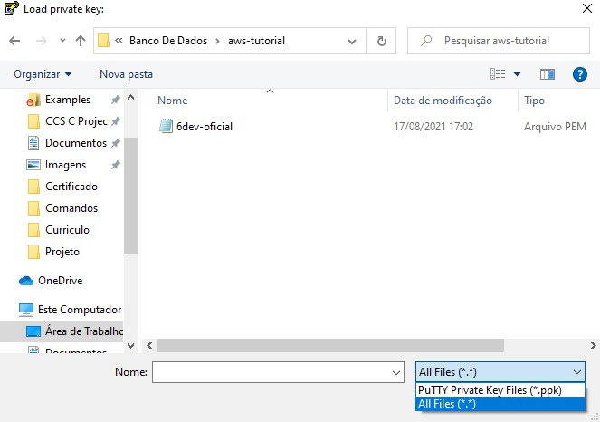Finalização
Um alerta de "PuTTYgen Notice" aparecerá, apenas clique em OK
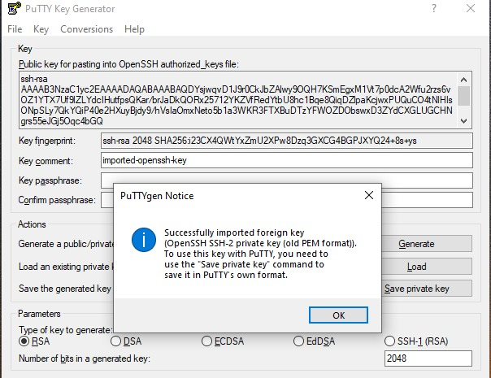Ao retornar para janela "PuTTY Key Generator", clique em Save private key , onde novamente aparecerá um alerta, dessa vez um ("PuTTYgen Warning"), apenas confirme este alerta em Sim
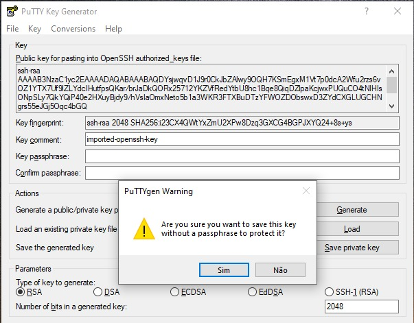Quando voltar a janela principal, nomeie o novo arquivo, em formato .ppk, de acordo com sua preferência, recomendamos que seja o mesmo nome do .pem, e clique em Salvar
Subindo o Apache2
Para subir o Apache em sua máquina recém criada são necessários apenas alguns passos simples, primeiramente pesquise por PuTTY na barra de pesquisa

Localize a lista de opções “Category”, na janela “PuTTY Configuration” que se abrirá
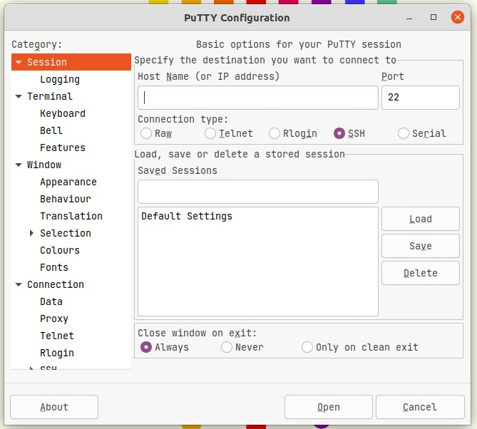Ainda nesta janela do PuTTY, em “Category”, abra a aba SSH
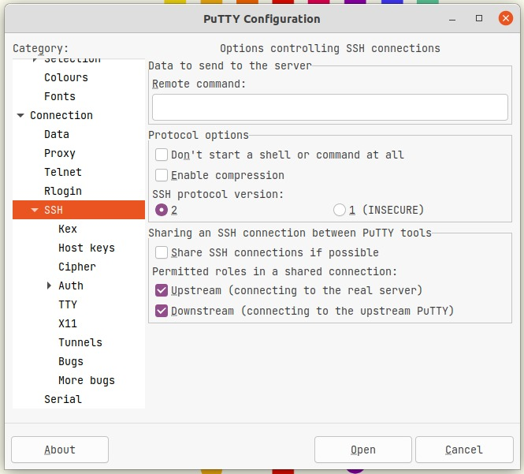E nesta aba, selecione a opção Auth
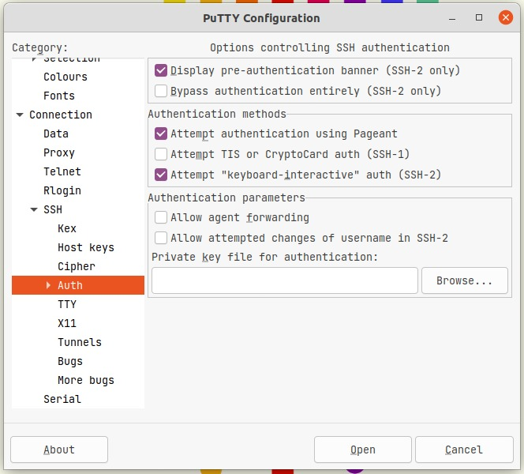 Auth" />Na janela de “Options controlling SSH authentication” clique em Browse... para procurar sua chave.ppk
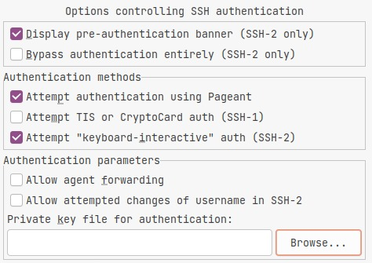Na tela de Select private key file procure entre seus arquivos a chave de sua máquina virtual salva em formato .ppk
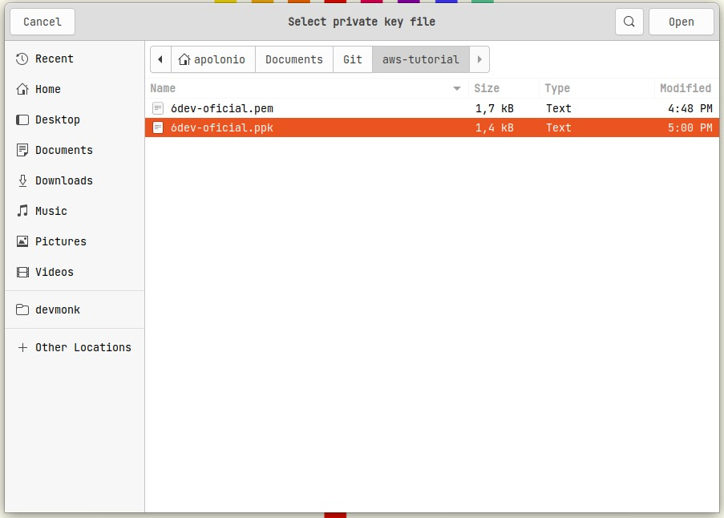Ao voltar à janela do PuTTy, em “Category vá na aba Session e na barra Host Name (or IP adress), digite o IP público de sua instância, que separamos lá trás e clique no botão Open localizado no canto inferior direito da janela!
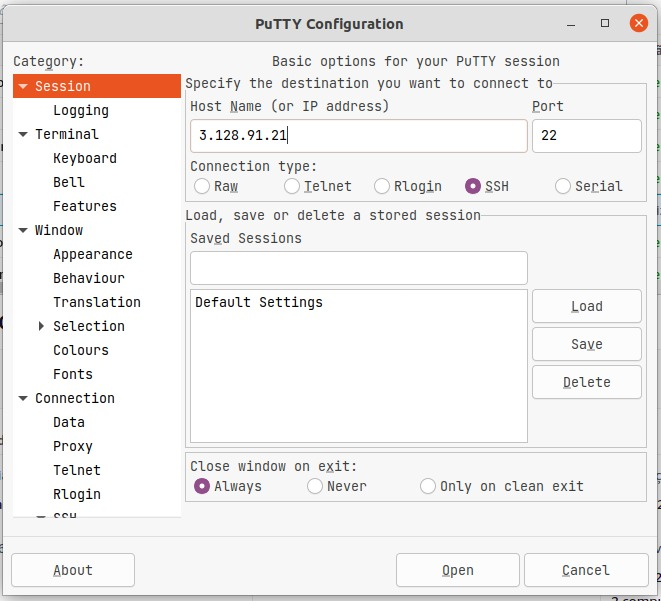Abrirá uma caixa de alerta denominada “PuTTY Security Alert”, basta clicar em “Accept” para continuar o processo
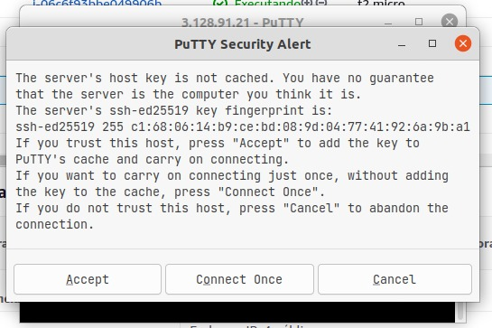O PuTTY irá inicar um painel de comando, solicitando o usuário em Login as: , no caso desta VM o usuário é “ubuntu”, basta inserir na linha solicitada
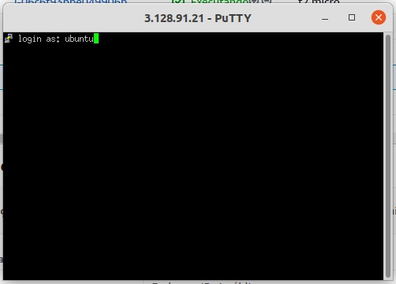Após a inicialização de uma máquina com sistemas operacionais Linux o primeiro é necessário fazer o update dos arquivos, basta inserir o comando sudo apt update no prompt; seguido também do comando sudo apt upgrade
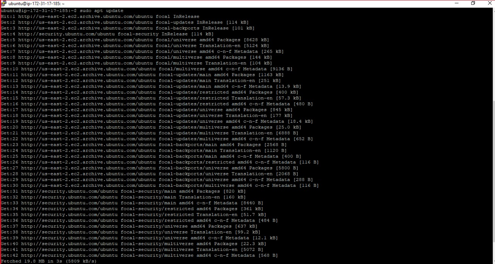 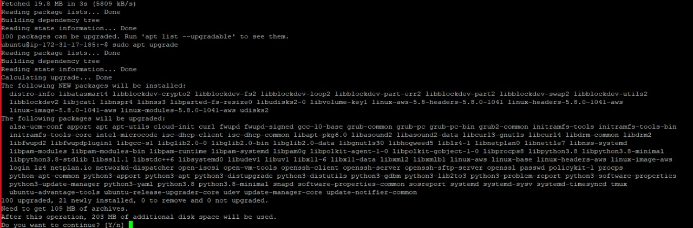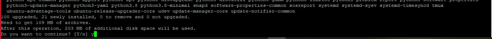 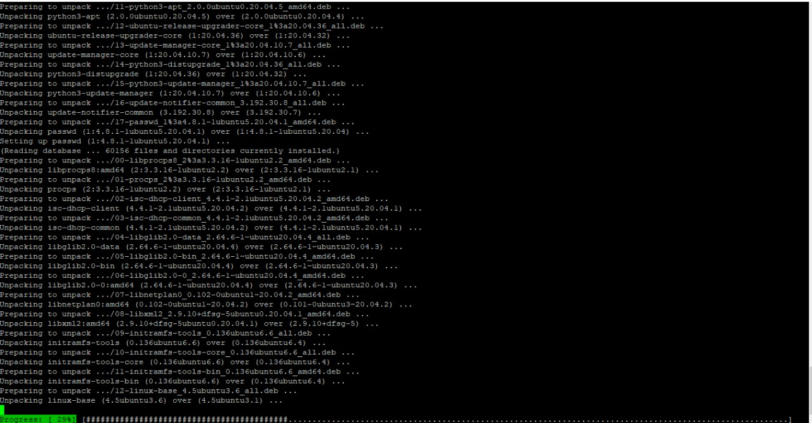
Após a finalização da atualização, basta inserir o comando
sudo apt install apache2 no prompt para
iniciar o processo de instalação o Apache
Durante a instalação, irá pedir que pressione y para permitir
a instalação do Apache
Finalizando
Para confirmar se o Apache foi instalado e está rodando, basta digitar seu IP público em seu navegador padrão, assim você será levado para uma página com o seguinte conteúdo:
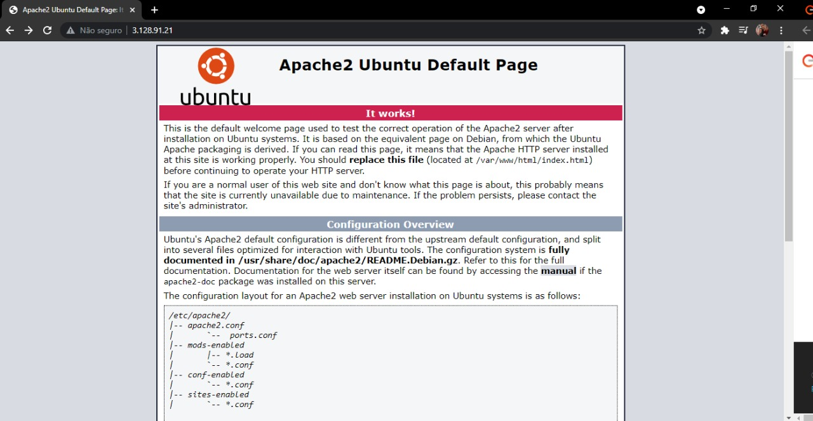